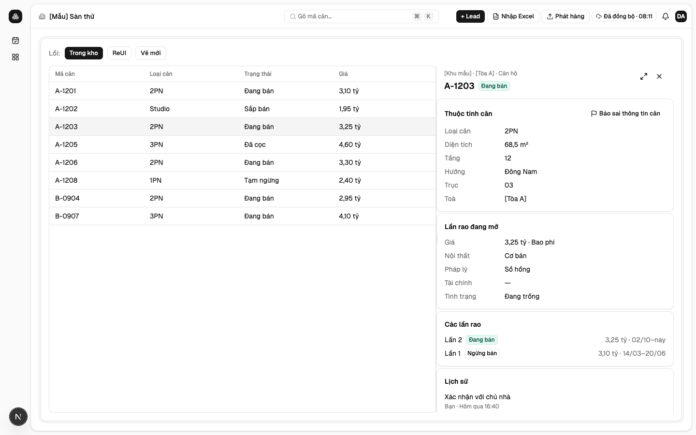
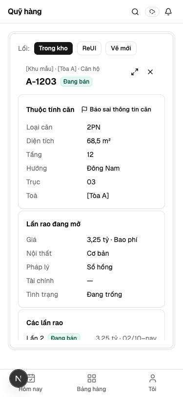
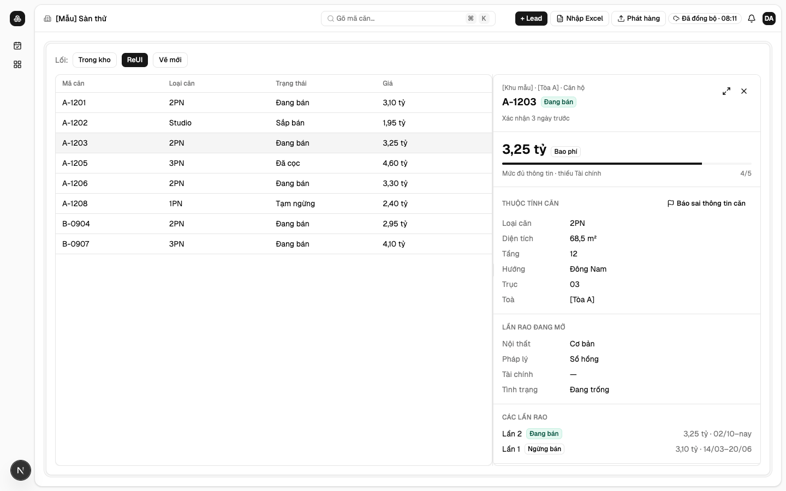
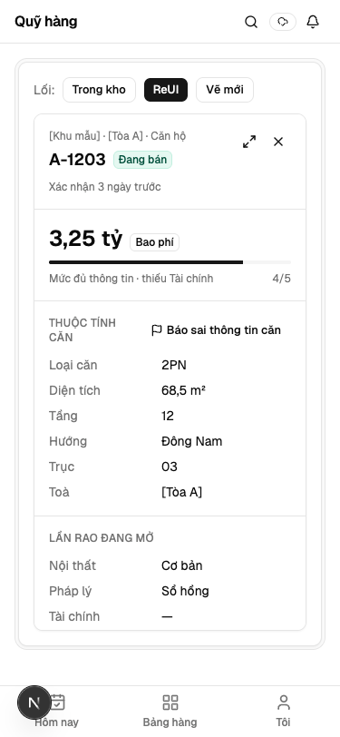
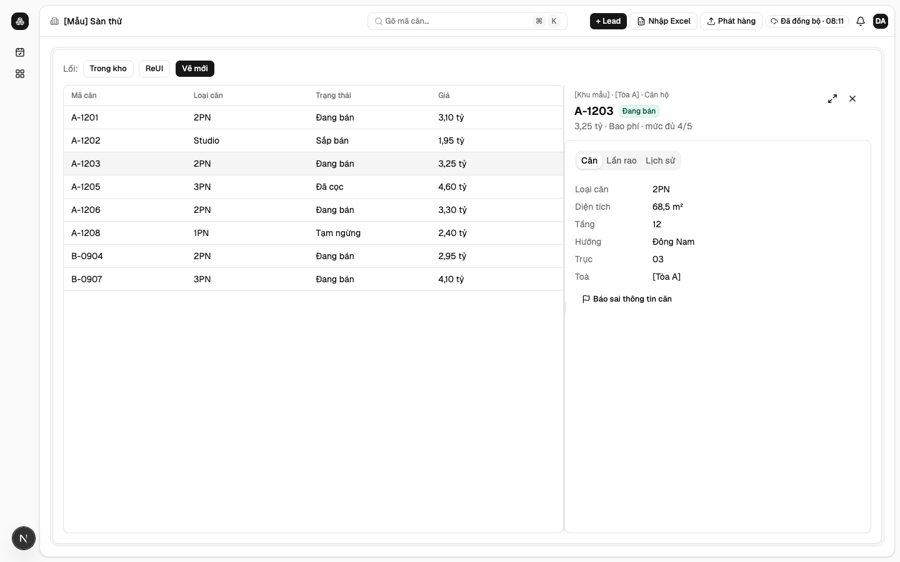
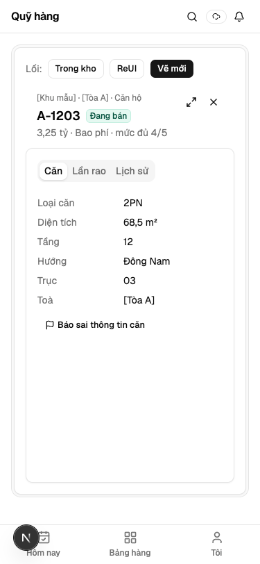
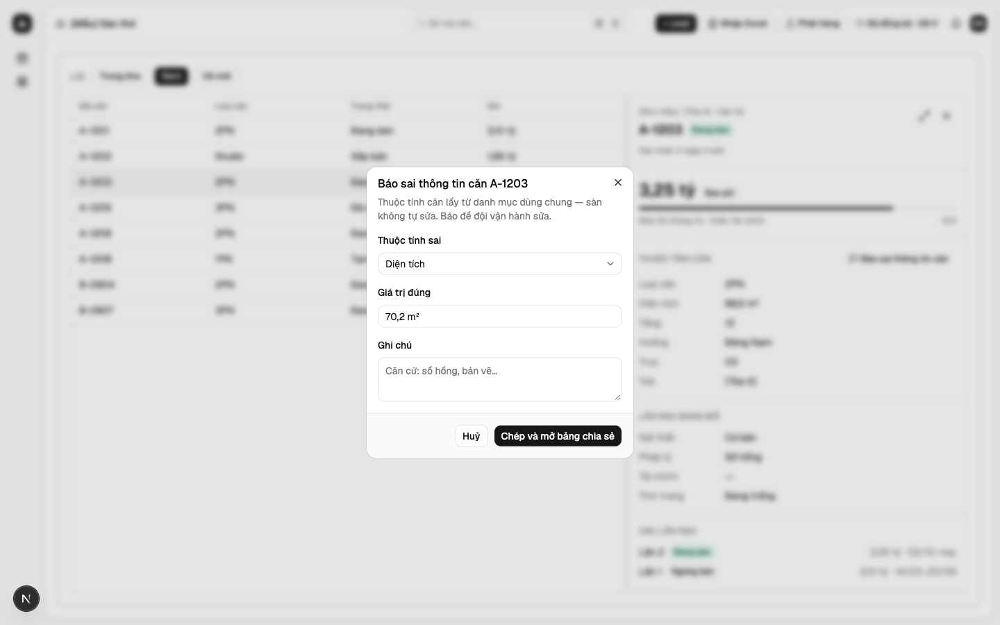

Cột hồ sơ căn — ba lối (hàng 17)
Cùng dữ liệu mẫu, cùng khổ 1440 và 375. Bảng bên trái là dòng giả, chỉ để thấy cột phải đứng cạnh bảng. Bản chạy: /proto/cot-ho-so-can?loi=… trên máy dev dãy H.
Máy khuyên: ReUI. Đúng khối đích đã chọn cho Hồ sơ căn, không phải tự ghép; giá và
mức đủ thấy đầu tiên, lịch sử trả giá cùng một lần cuộn — đầu chủ gọi chủ nhà cần thấy cả hai cùng lúc.
Trong kho
Khuôn Cài đặt sàn: mỗi mục một khung có tiêu đề

- Động cơ
- Đã có trong kho, quen mắt với Cài đặt sàn.
- Đánh đổi
- Bốn khung chồng ăn chỗ; lịch sử rơi xuống đáy, phải cuộn mới thấy.
ReUI · khuyên
solution-crm-4 chuyển thành cột: giá + mức đủ, trường chính, dòng thời gian

- Động cơ
- Khối đích đã chốt; giá, mức đủ và lịch sử đọc trong một cuộn.
- Đánh đổi
- Khối gốc là ngăn phủ — phải đổi thành cột chia đôi; dài hơn Vẽ mới.
Vẽ mới
Ghép khung + ba ngăn: Căn · Lần rao · Lịch sử

- Động cơ
- Gọn nhất, không cuộn.
- Đánh đổi
- Lịch sử và lần rao nằm sau một chạm; tự ghép nên phải ghi «Chỗ hở» kèm hạn xem lại.
Báo sai thông tin căn (chung cho ba lối)
Theo khuyến nghị Hỏi-1: soạn lời báo rồi chép và mở bảng chia sẻ của thiết bị